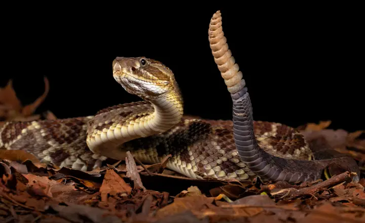

Crotalus durissusIdentificação
A cascavel é uma serpente peçonhenta reconhecida pela presença de chocalho (guizo) na extremidade da cauda, estrutura que produz som característico quando vibrada. Apresenta padrão dorsal com manchas em formato de losangos ao longo do corpo, podendo também exibir faixas paravertebrais na região anterior.
Peçonhenta?
Sim. Possui peçonha de elevada importância médica, com ação predominantemente neurotóxica e miotóxica, podendo causar alterações neuromusculares e comprometimento sistêmico, exigindo atendimento médico imediato.
Habitat
Ocorre principalmente em ambientes abertos, como campos e áreas de cerrado, sendo favorecida por regiões com menor cobertura florestal. Também pode ser encontrada em áreas alteradas pela ação humana.
Comportamento
Possui hábito predominantemente terrestre e comportamento geralmente defensivo. Quando se sente ameaçada, pode vibrar o chocalho como forma de advertência, sinalizando sua presença antes de um possível ataque. Assim como outras serpentes, não costuma atacar sem motivo, sendo a maioria dos acidentes resultado de contato acidental ou tentativa de manipulação. Em condições normais, tende a evitar o contato com seres humanos.
Importância ecológica
Desempenha papel fundamental no controle populacional de pequenos vertebrados, especialmente roedores, contribuindo para o equilíbrio das cadeias alimentares.
Apesar de ser peçonhenta, a cascavel exerce função ecológica essencial. A eliminação desses animais pode causar desequilíbrios ambientais, sendo recomendado manter distância e acionar manejo adequado.